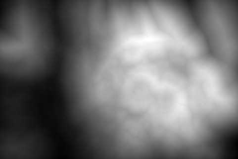
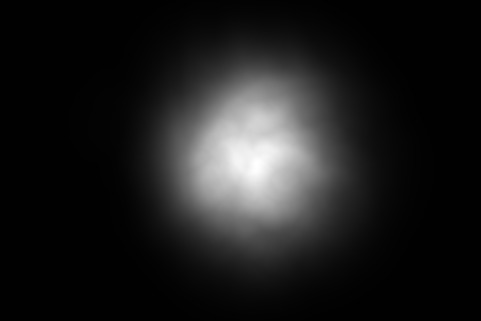

In contrast we have developed an extremely simple method that is based on edges alone, and does not require the potentially unreliable stage of image segmentation. Edges are computed using a pyramid, and the distance transform is applied to the edge magnitudes at multiple thresholds to generate an estimate of edge density, which we have found to often be a reasonable indicator of salience.
| source image |
|  |
| salience map |
| overlaid thresholded salience map |
|  |
| salience map with central prior |
| overlaid thresholded salience map |
For some data sets, including a central prior can generate better results, although this is not always the case (see the example above).
More details are given in:
You can download code to implement the original method described in the paper as well as an extended version.
return to Paul Rosin's homepage